Learning from Language Feedback via a Co-Evolutionary EM Framework
Reinforcement learning from verifiable rewards (RLVR) suffers from sparse outcome signals, creating severe exploration bottlenecks on complex reasoning tasks. Recent on-policy self-distillation methods attempt to address this by utilizing language feedback to generate dense, token-level supervision. However, these approaches rely on a fixed, passive teacher to interpret the feedback. As the student policy improves, the teacher's zero-shot assessment capabilities plateau, ultimately halting further learning.
We propose Variational Policy Distillation (VPD), a framework that formalizes learning from language feedback as a Variational Expectation-Maximization (EM) problem. VPD co-evolves both policies: in the E-step, the teacher is actively refined on trajectory outcomes via an adaptive trust-region update, translating textual feedback into a dynamically improved target token distribution. In the M-step, the student internalizes this dense distributional guidance on its own on-policy rollouts. By continuously improving the teacher's ability to extract actionable signals from textual critique, VPD overcomes the limitations of passive distillation, consistently outperforming both standard RLVR and existing self-distillation baselines across scientific reasoning and code generation.
Standard RLVR optimizes against sparse, binary outcomes — wasting the latent diagnostic information embedded in failed trajectories. Existing self-distillation methods such as SDPO inject language feedback, but only through a frozen, zero-shot teacher. VPD reframes this as a principled variational inference problem and asks four questions that prior work cannot answer:
How can we densify binary outcome signals without losing the unbiased ground-truth they provide?
How do we prevent the passive teacher's zero-shot critique from saturating as the student improves?
How can the teacher's target distribution stay reachable for the active student policy?
How do we co-evolve teacher and student without doubling VRAM with a second model?
We formalize on-policy learning from language feedback as a Variational EM procedure. This introduces an explicit, feedback-aware teacher update (absent from prior self-distillation methods) implemented via unpaired preference optimization. By dynamically anchoring the teacher to the current student, we enforce an adaptive trust region that ensures highly stable on-policy KL distillation over a shared-weight network.
We instantiate VPD across three sources of diagnostic feedback: deterministic environment verifiers (compiler errors), contrastive sibling rollouts, and autonomous self-critique via an LLM judge. Evaluated on competitive programming and scientific reasoning benchmarks across Qwen3-1.7B, Qwen3-8B, and OLMo3-7B-Instruct, VPD consistently outperforms standard RLVR and self-distillation baselines.
We stress-test VPD on cold-start base models and rigid mathematical reasoning, empirically establishing the limits of language-driven self-distillation. VPD significantly mitigates and delays the training collapse typically observed in these settings, while clarifying where pure sparse RL ultimately remains the most effective paradigm.
Rather than treating the feedback-conditioned model as a fixed heuristic, VPD treats it as
an approximate posterior qϕ(y | x, C) over correct solutions
that must be actively optimized alongside the student policy πθ(y | x).
This variational perspective naturally decomposes training into two alternating phases:
We actively train the teacher's ability to interpret language feedback by optimizing it to distinguish successful from failed trajectories given the textual critique. Because preference pairs cannot be formed (feedback is unique per trajectory), we use Binary Classifier Optimization (BCO) — an unpaired preference loss with a moving reward shift δ.
We project the refined teacher back into the student's unconditioned hypothesis space by minimizing the token-level KL divergence over the student's own on-policy rollouts. Because the E-step trust region keeps the teacher reachable, the M-step distillation is highly stable and avoids mode collapse.
A naïve EM loop would anchor the teacher's implicit reward to a static base model. In a co-evolutionary setting, this causes severe distribution shift between teacher and student. VPD instead frames the E-step as an iterative trust-region update by anchoring the reference prior to the current student policy:
This sliding trust region restricts the teacher to a safely reachable target distribution around the student's current support, ensuring the dense distributional guidance provided during the M-step is always a viable "next step". The result is monotonic ELBO improvement under generalized EM — and dramatic empirical stability over static-prior baselines.
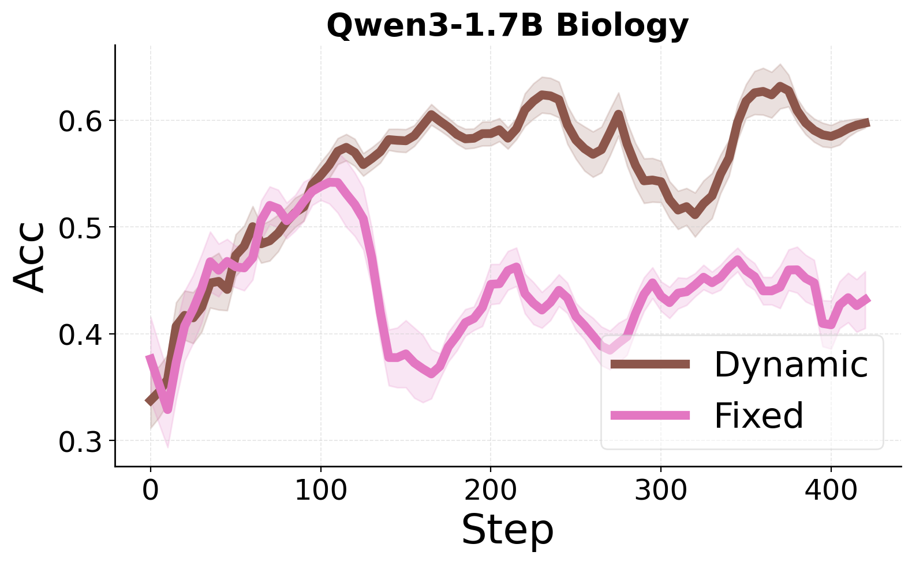
Figure 5: Reverting to a static reference prior on Qwen3-1.7B Biology (pink) causes severe training instability. VPD's dynamic prior (brown) yields a stable, monotonically improving trajectory.
| Method | Dense Feedback | Active Teacher | Trust-Region Constrained | Shared-Weight | Co-Evolution |
|---|---|---|---|---|---|
| GRPO / RLVR | ✗ | — | — | — | ✗ |
| SDPO / OPSD | ✓ | ✗ | ✗ | ✓ | ✗ |
| SDPO + RL (hybrid) | ✓ | ✗ | ✗ | ✓ | ✗ |
| π-Distill | ✓ | ✓ (off-policy) | ✗ | ✗ | partial |
| VPD (Ours) | ✓ | ✓ (on-policy) | ✓ | ✓ | ✓ |
VPD is the only method to combine an actively optimized teacher, a dynamic trust region, and a shared-weight architecture inside a single co-evolutionary EM loop.
Sample a batch of prompts and generate N student trajectories per prompt
from the current policy πθ.
For each trajectory, the verifier returns a binary outcome r(x, y) and
diagnostic feedback C — compiler errors, contrastive sibling rollouts,
or self-generated critique.
Update the teacher via unpaired preference optimization (BCO) against the dynamic implicit reward. Partition trajectories into successes and failures, compute the moving reward shift δ, and minimize the binary cross-entropy loss.
Distill the refined teacher into the student by minimizing token-level KL divergence on the student's own rollouts, with stop-gradient on the teacher logits.
A core strength of VPD is its versatility across diverse feedback channels. We evaluate three instantiations that span the spectrum from deterministic environment signals to self-generated critique.
LiveCodeBench provides natural, deterministic textual diagnostics — runtime errors and failed unit-test assertions — that VPD distills directly into the policy.
When the environment is a sparse verifier (SciKnowEval), we synthesize C from a successful sibling rollout sampled from the same prompt group.
When all sibling rollouts fail, the model acts as its own judge — generating autonomous critiques that the E-step then refines and the M-step distills.
Pass-rate on held-out private unit tests; +2.3 over SDPO, +4.0 over GRPO.
Consistent gains across model families, scales, and feedback sources.
| Model | Method | Bio. | Chem. | Mat. | Phys. | AVG |
|---|---|---|---|---|---|---|
| Qwen3-1.7B | Base | 33.6 | 41.0 | 50.1 | 49.9 | 43.6 |
| GRPO | 61.3 | 75.7 | 74.9 | 67.4 | 69.8 | |
| SDPO | 61.5 | 72.4 | 71.5 | 59.9 | 66.3 | |
| VPD | 64.8 | 81.9 | 77.1 | 73.7 | 74.3 | |
| Qwen3-8B | Base | 31.1 | 42.1 | 59.2 | 59.1 | 47.9 |
| GRPO | 62.5 | 76.6 | 77.3 | 76.1 | 73.1 | |
| SDPO | 61.6 | 82.3 | 79.6 | 74.3 | 74.4 | |
| VPD | 68.0 | 82.4 | 77.7 | 80.6 | 77.2 | |
| OLMo3-7B-Instruct | Base | 16.1 | 22.8 | 34.7 | 37.3 | 27.7 |
| GRPO | 52.9 | 69.9 | 74.0 | 66.1 | 65.7 | |
| SDPO | 50.0 | 80.2 | 70.2 | 63.9 | 66.1 | |
| VPD | 55.6 | 80.3 | 76.1 | 71.2 | 70.8 |
Table 2: VPD consistently outperforms GRPO, SDPO, and SDPO+RL hybrids across three model families and four scientific domains.
As training progresses, SDPO's reward margin between correct and incorrect responses rapidly collapses — a clear signature of the passive teacher saturating. VPD's E-step continually sharpens the teacher's critique, opening a widening gap that powers downstream M-step distillation.
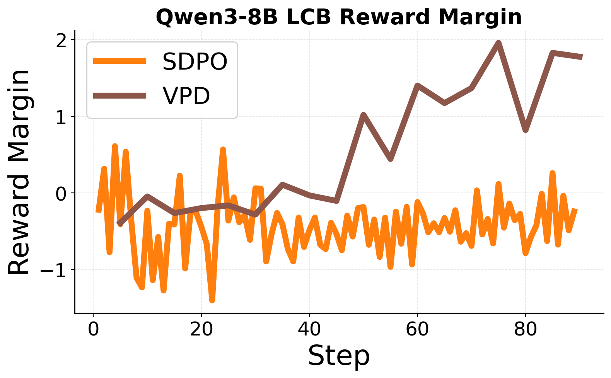
Figure 1: Reward margin r̃(x, y+, C+) − r̃(x, y−, C−) during LCB training. SDPO (orange) stays near zero; VPD (brown) steadily grows, confirming the E-step continually refines the teacher.
Single-phase hybrid methods (SDPO+RL Adv-Reshape / Reweight / Joint-Loss) suffer from catastrophic scale mismatches between unbounded log-ratios and high-variance RL advantages. Plain SDPO degrades late in training. VPD's decoupled EM formulation eliminates both pathologies and exhibits a stable, monotonic convergence curve.
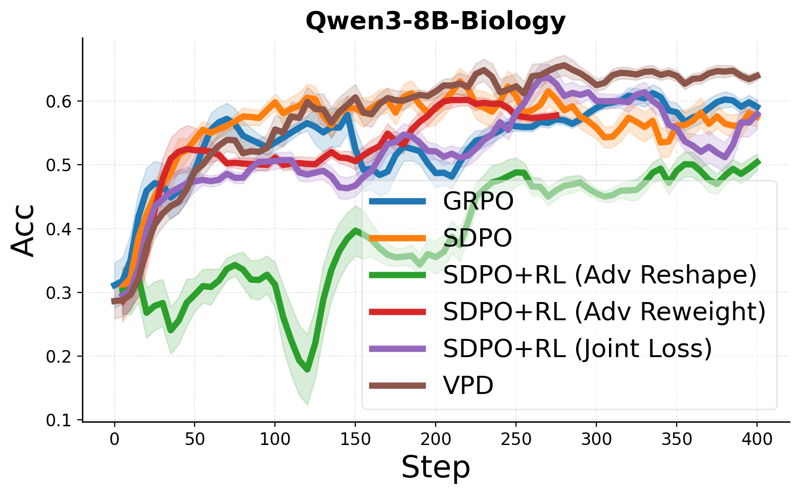
Qwen3-8B · SciKnowEval Biology
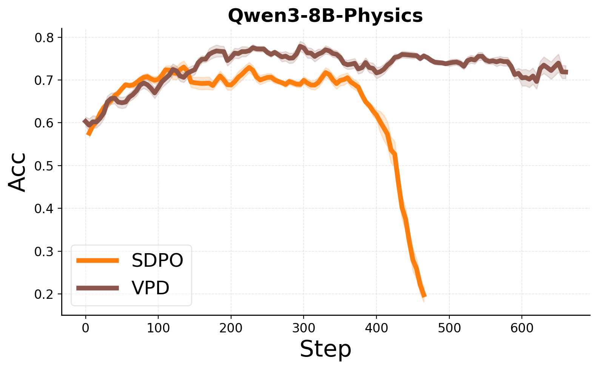
Qwen3-8B · Physics (SDPO collapses, VPD stays stable)
Figure 2: VPD avoids both the late-stage degradation of plain SDPO and the catastrophic instability of single-phase hybrid baselines.
When all sampled trajectories for a prompt are incorrect, contrastive siblings provide no guidance. In the self-critique setting, the model acts as its own judge — generating diagnostic critique against only the ground-truth final answer. VPD still significantly outperforms SDPO, pointing to a compelling future direction: co-evolving the judge alongside the reasoning policy.
| Model | Method | Bio. | Chem. | Mat. | Phys. | AVG |
|---|---|---|---|---|---|---|
| Qwen3-1.7B | SDPO | 62.1 | 78.7 | 71.2 | 58.1 | 67.5 |
| VPD | 64.8 | 79.4 | 73.5 | 70.3 | 72.0 | |
| Qwen3-8B | SDPO | 61.4 | 82.3 | 83.7 | 72.0 | 74.9 |
| VPD | 65.4 | 83.5 | 84.2 | 79.5 | 78.1 |
Table 3: VPD with autonomous self-critique outperforms SDPO across architectures, hinting at fully self-improving feedback loops.
We stress-test VPD on two settings where all self-distillation methods struggle relative to pure RL: cold-start base models and rigid mathematical reasoning. In both regimes, VPD significantly delays training collapse — but pure GRPO remains the most effective strategy, illuminating an inherent limit of unstructured textual feedback for strict logical derivation.
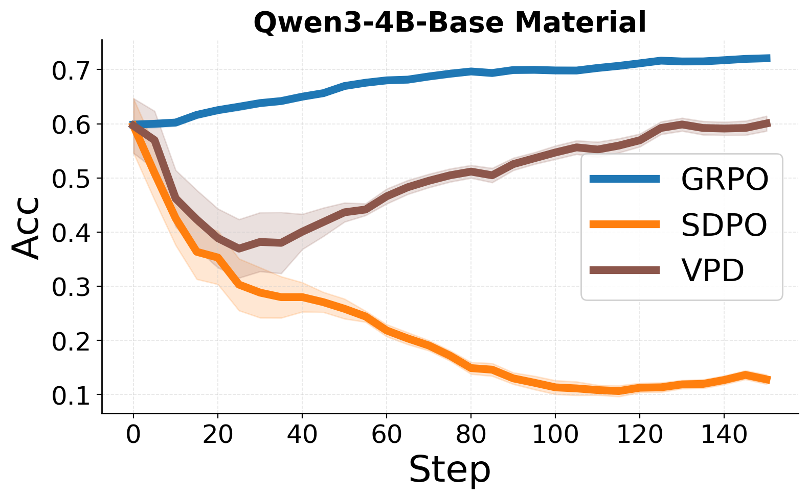
Figure 3 · Cold start: VPD delays the SDPO collapse on a base model.
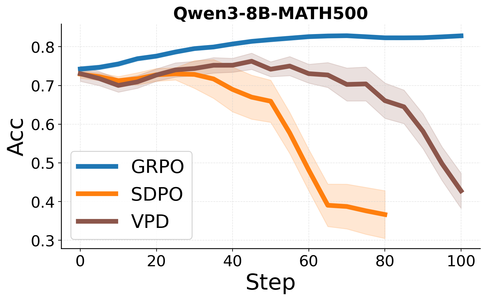
Figure 4 · Math500: VPD substantially delays collapse but GRPO still wins.
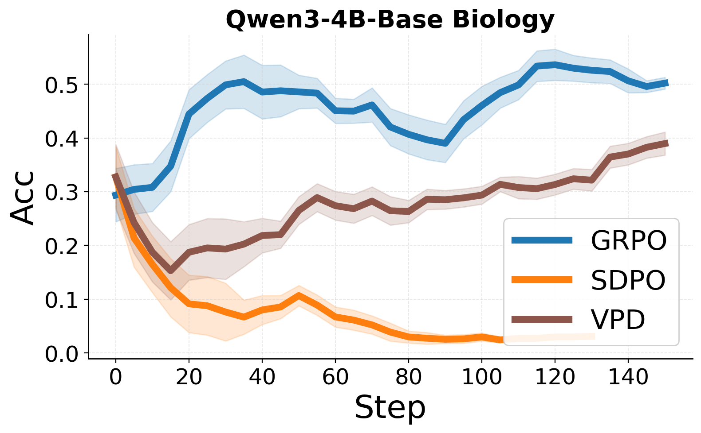
Biology
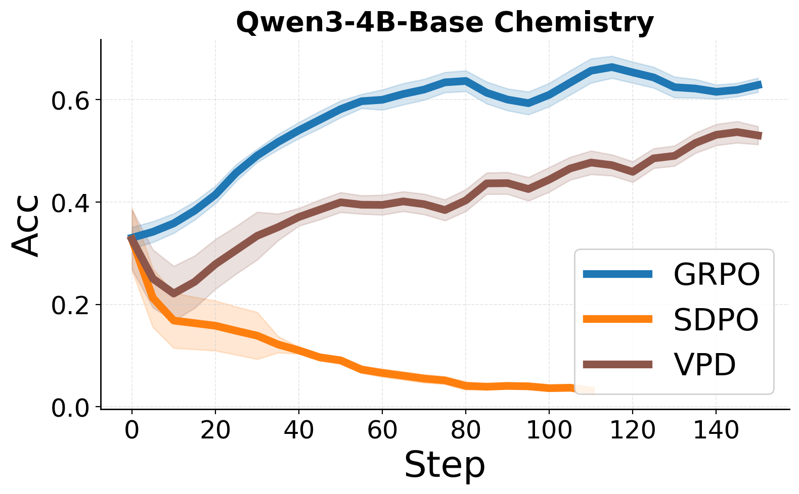
Chemistry
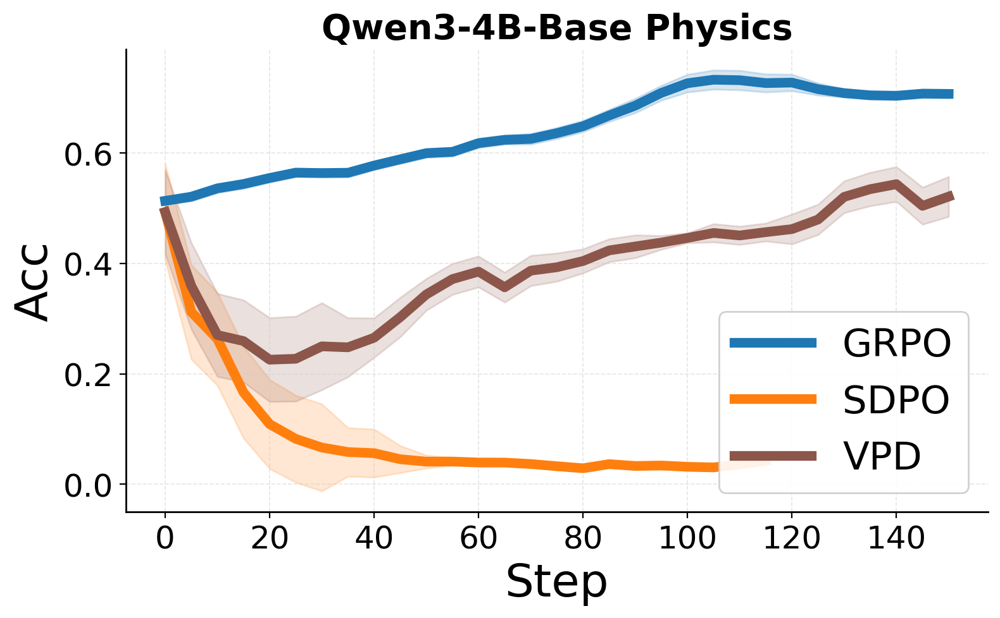
Physics
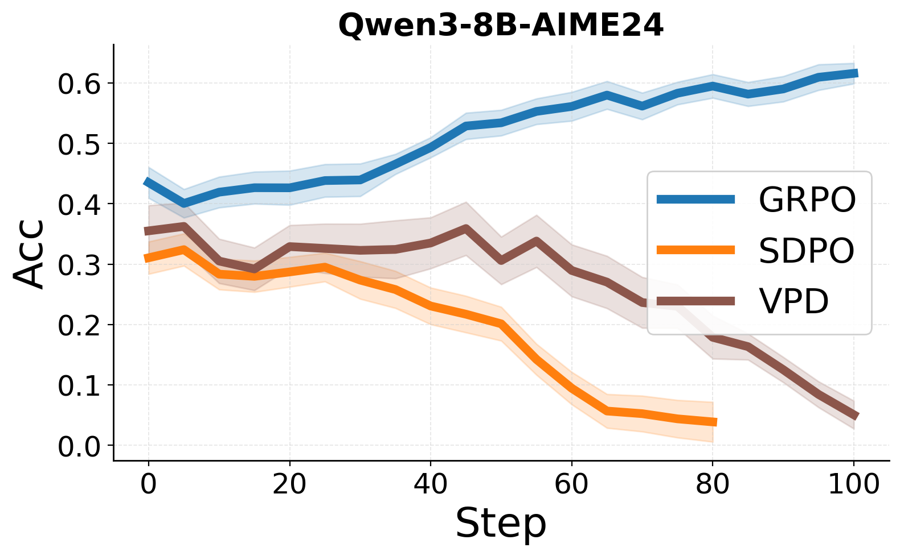
AIME 2024
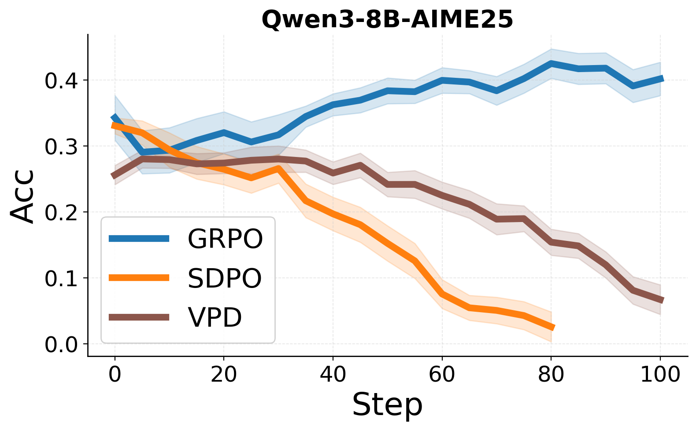
AIME 2025
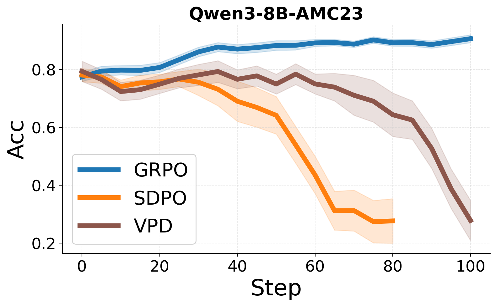
AMC 23
Updating the teacher too often (F = 1) creates a volatile target distribution; updating too rarely (F = 10) yields stale guidance. The empirical sweet spot is F = 5.
| Frequency | Bio. | Chem. | Mat. | Phys. | AVG |
|---|---|---|---|---|---|
| VPD (F1) | 61.1 | 78.5 | 72.5 | 68.8 | 70.2 |
| VPD (F5) | 64.8 | 81.9 | 77.1 | 73.7 | 74.3 |
| VPD (F10) | 59.5 | 79.5 | 71.6 | 66.5 | 69.3 |
A fixed reference prior decouples the teacher's guidance from the student's exploration space, destabilizing the M-step. VPD's dynamic prior tracks the student and yields a +6.5 average improvement on Qwen3-1.7B.
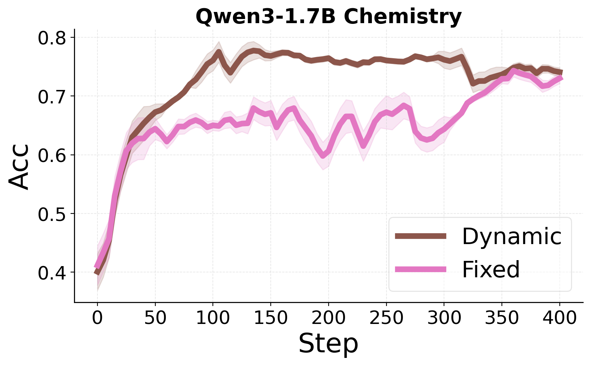
Chemistry
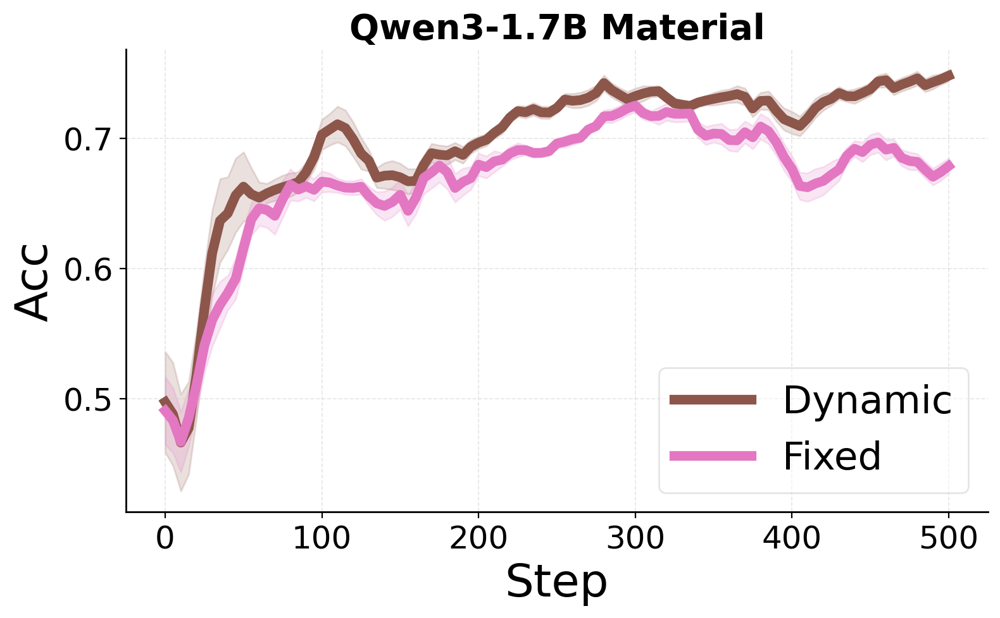
Material Science
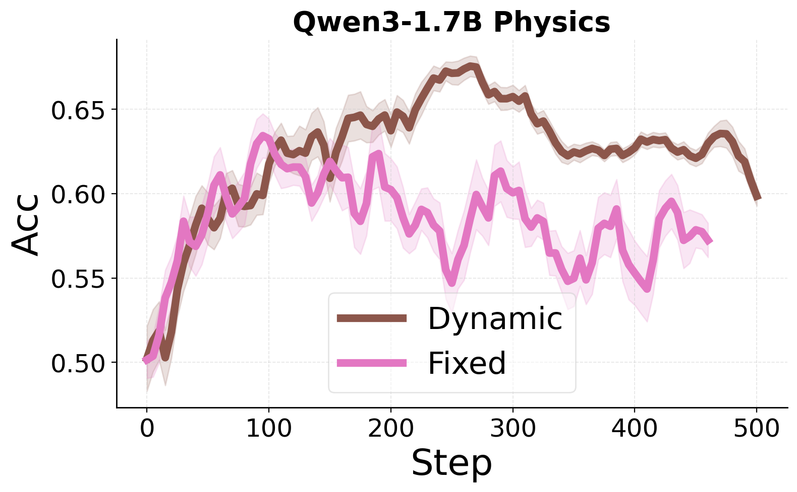
Physics
Figure C.3: Across all SciKnowEval domains, the dynamic prior (brown) is markedly more stable than the fixed prior (pink).
Co-evolution beats passive distillation. Actively refining the teacher via a Variational E-step yields a widening reward margin where SDPO's saturates, translating into +2-8% gains across LiveCodeBench, SciKnowEval, and self-critique settings.
The dynamic trust region is essential. Anchoring the teacher to the current student (rather than a static πref) keeps the M-step target reachable and eliminates the late-stage collapse that plagues plain SDPO and single-phase hybrids.
Memory-efficient by design. A shared-weight network (ϕ = θ) means VPD adds no VRAM and no extra sampling cost over SDPO — only a modest 30-55% runtime overhead, controlled by asymmetric update frequencies.
Honest limits. On cold-start base models and rigid math reasoning, even VPD lags pure RLVR. Self-distillation needs a baseline of instruction-following competence and forgiving feedback — sparse outcome-driven RL still wins where every intermediate token must be precisely correct.
@article{li2026vpd,
title = {Learning from Language Feedback via Variational Policy Distillation},
author = {Li, Yang and Nijkamp, Erik and Yavuz, Semih and Joty, Shafiq},
journal = {arXiv preprint arXiv:2605.15113},
year = {2026}
}